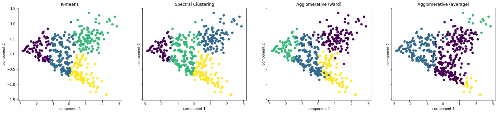
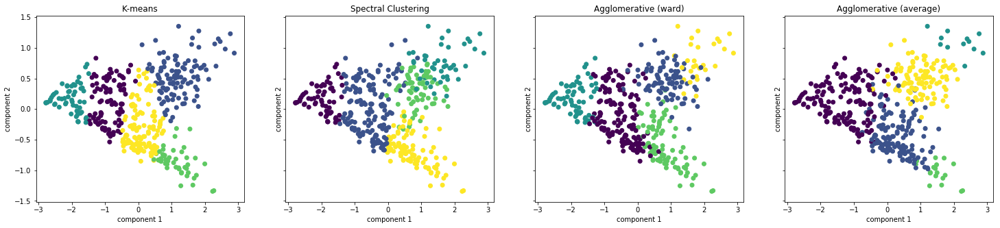
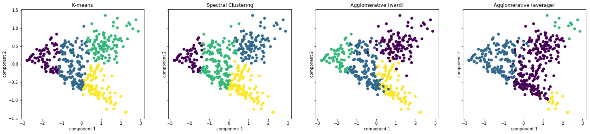
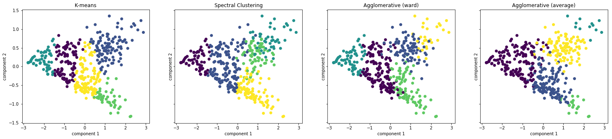

The Social Tribe Write-Up
Cornell Data Science: Data Visualization Spring 2018
Max Chen, Sam Kitterman, Kevin Ngo, Shalin Mehta, Danny Yang
1. Background
1.1 Problem Statement
Our motivation for this project stemmed from the question of whether social media accounts actually promote interactions among a large group of diverse individuals. We wanted to research and observe if people simply interacted with only a specific “tribe” of peers on social media accounts similar to how they do in real life. However, after considering this topic from a broad lens, we decided to settle on investigating interactions among people within political groups — namely political journalists — because they tend to have naturally-arising close-knit communities of their own. Our objective was to determine if people from a given political group solely interacted with other members within that group, or if they also interacted with members of a different affiliation. Moreover, we wanted to see whether any individuals in particular carried more weight within a specific group, thereby influencing political interactions in a particularly interesting way.
1.2 Summary of Process
1.2.1 Collecting Data
After considering the various social media platforms we could investigate (i.e. Facebook, Twitter, Instagram, etc.), we decided to settle on Twitter because it had a more flexible API to scrape data and also provided specific, relevant data on political journalists. We ended up using a Twitter data set consisting of 406 political figures. However, to construct a larger data set, we decided to add 44 established journalists (roughly 10 percent of the current set size) to the data set. Due to some overlap in names, we ended up with a net total of 432 political figures in our data set, which is why we constructed a 432 x 432 similarity matrix. More detailed information about the dataset used can be found in Section 2.
1.2.2 Clustering Algorithms
We experimented with numerous clustering methods to identify which method best models our data for visualization and correlation purposes. Some of the algorithms we investigated include K-Means Clustering, Spectral Clustering, Agglomerative Hierarchical Clustering, and Gaussian Mixture Modeling. More detailed information regarding the implementation and results of these algorithms can be found in Section 4.
1.2.3 Visualization Methods
In addition to modeling, we also experimented with the different ways that we could visualize our findings for better comprehension of any significant patterns or results. We investigated the following representations: chord diagrams, dendrograms, edge bundling, and force-directed layouts. More detailed information regarding these visualizations can be found in Section 4.
2. Dataset Description
2.1 Overview
The final structure of the data used for the clustering algorithms was a 432 x 432 similarity matrix. The metric used to calculate the similarity between two political journalists is described by:
where P1 and P2 are political journalists and followerfriends(P) is the set of combined followers and friends (people following) of political journalist P. Our logic behind this formula is described below.
2.2 Feature Selection/Preprocessing
Data was collected through the Twitter API. A number of features were collected for each political journalist including:
From the large number of features collected, we needed to decide which features were the most relevant and the most feasible to implement. We came to the conclusion that a metric for shared followers/friends would provide a strong indication for content similarity between two political journalists. In order to account for the vastly different number of followers between journalists, the intersection of followers/friends was divided by a min function. A min function was used instead of the simple union of the two sets in order to more heavily weigh the similarity score for smaller Twitter users. The use of the min function assured that the large follower bases of popular journalists did not dwarf a clear similarity that a smaller journalist may have had with said larger journalist.
2.3 Data Validation
Originally, our dataset consisted of only 406 political journalists. However, in order to better classify the accuracy of our algorithms, 44 significant political figures with well-known political affiliation were added to the dataset (several of these were already in our original group of 406 political journalists, but now had known labels). The known labels for this portion of the dataset were not used by any of our clustering algorithms; however, they provide another way of evaluating what our clusters represent.
3. Exploratory Analysis
Note: from this section onwards, we will always use k to describe the number of clusters, d to describe the number of dimensions, and n to describe the number of samples.
3.1 Descriptive Statistics
To better understand our data, we looked at the distribution of the 186,624 similarity scores across our entire similarity matrix. We removed the values that were equal to 1.0, since those were the result of comparing a sample to itself.
Figure 1. Histogram of the relative frequency of similarity scores.
The descriptive summary statistics confirm the overall distribution. The skewness was 0.94, indicating a moderate to high rightwards skew. The mean of 0.1249 indicates a low average similarity score between samples, and the variance of 0.00759 (std. dev. = 0.0871) is quite high, due to the overall skewness of our distribution.
3.2 PCA
Principal Component Analysis, or PCA is a technique for transforming data into a set of uncorrelated features called principal components. This has the effect of reducing the number of features (dimensionality), while capturing most of the variance of the dataset in the remaining features. In a way, PCA essentially eliminates any redundant data by only using the features that encompass most of the relevant information. Thus, due to the high dimensionality of our data (432 dimensions due to our data matrix), we decided to use PCA to help us discover if there was potentially a small subset of features that accounted for most of the variance of the data. Had this been present, it would have indicated that the clusters in the data the ego networks of a small number of influential people. However, we found that this was not the case.
The plots below show the cumulative explained variance plotted against the number of components; the left plot is a highlight of 0-15 components, while the right plot shows 0-100 components. At 15 components the explained variance is only 0.75, and at 100 components the explained variance is around 0.85. This indicates that we could not drastically reduce the dimensionality of the data without losing a significant amount of information.
Figure 2. Explained Variance vs. Number of Components for PCA
Based on our results, the first and second principal components account for roughly 63% of the variance in the data. We plotted the data points in 2 dimensions using the first and second principal components resulting from PCA in the figure shown below. The low explained variance when only using 2 components is reflected by the lack of obvious correlations or well-defined clustering of our samples.
Figure 3. Our dataset projected onto two dimensions (1st and 2nd principal components)
4. Methods
4.1 Clustering
Since we did not know the “correct” answer for what clusters (if any) existed in our data, we needed to use unsupervised methods to discover any hidden structure in our data. Based on the results of our exploratory analysis, we focused on unsupervised clustering techniques that would work well with high-dimension data. The models were fitted using the entire similarity matrix, without reducing dimensionality (n = d = 432).
4.1.1 K-means and Spectral Clustering
We chose K-means clustering as a simple baseline model. K-means is not an ideal method due to the high dimensionality of our data set and the unknown relative sizes of the clusters, but we wanted to see if it could still provide any useful insight into the underlying structure of the data.
We also decided to also use Spectral Clustering as it is more suited to modeling our dataset. Spectral Clustering mitigates the problems that K-means has with high-dimensional data by first transforming the data to a low-dimension sample space before performing K-means. Our K-means clustering visualization can be found in Section 6.1.
4.1.2 Agglomerative Clustering
We wanted to investigate potential hierarchical structure of groups using a hierarchical clustering algorithm like Agglomerative Clustering, which starts with each sample being a separate cluster and merges the two closest clusters at each iteration. We experimented with several different methods of determining which clusters to merge, including Ward’s method, Average Linkage, and minimizing the Euclidean distance between the centroids of each cluster. Ward’s method minimizes the variance between the two merged clusters and Average Linkage minimizes the average distance between points in the merged clusters. Ultimately, agglomerative clustering produces a tree-like diagram called a dendrogram, which models how the clusters were combined at each iteration. Our agglomerative clustering visualizations can be found in Sections 6.1 and 6.4. Our dendrogram visualizations can be found in section 6.2.
4.1.3 Gaussian Mixture Model
Our data set consists of similarity scores between people. Generally speaking, one cannot strictly define whether a person is completely similar to another, i.e., whether one data point strictly belongs to one cluster or another. As such, we had to rely on using a Gaussian Mixture Model. It is a probabilistic model, and thus, it is more flexible by providing us with the ability to search for clusters based on confidence as opposed to strict distance.
We chose to run a model with three clusters, representing a political spectrum, and diagonal covariance matrices. We used diagonal covariance matrices over general covariance matrices because the Bayesian Information Criterion (BIC) score for diagonal covariance was approximately -50,000 as opposed to 5,000 for general covariance, indicating that there was much less loss of data with diagonal covariance.
4.2 Evaluation
Since the ground truth labels are not known, cluster quality must be evaluated solely using the model. Thus, we chose only unsupervised methods of cluster quality evaluation.
4.2.1 Silhouette Score
The Silhouette Score is a measure of the cohesion within each cluster and the separation between different clusters. It is not a measure of the correctness of the labels, because the correct labels are not known. The score for a single sample is calculated using the following formula:
Here, a is the mean distance between that sample and all other points in the same cluster and b is the mean distance between that sample and all other points in the next nearest cluster. Scores are bounded between -1 and 1, with more positive scores indicating “better” (denser) clusters and lower magnitudes indicating more overlap and less distinction between clusters.
5. Results and Analysis
We fitted the K-means, Spectral Clustering, and Agglomerative Clustering (for ward and average linkages) models for k = 2 to k = 18 and calculated the silhouette scores for the results.
k | K-means | Spectral | Agglom. (Ward) | Agglom. (Avg) |
2 | 0.263909452 | 0.267196251 | 0.24665851 | 0.258661819 |
3 | 0.169099698 | 0.173822683 | 0.160697285 | 0.190773034 |
4 | 0.14904016 | 0.147036926 | 0.135671131 | 0.158419398 |
5 | 0.124761984 | 0.119549585 | 0.12086132 | 0.149616795 |
6 | 0.113699698 | 0.104307323 | 0.09405637 | 0.110492781 |
7 | 0.112533383 | 0.115197608 | 0.097295913 | 0.113817503 |
8 | 0.106169814 | 0.118837976 | 0.098838963 | 0.110460241 |
9 | 0.092433743 | 0.101118037 | 0.095473212 | 0.095652469 |
10 | 0.103165197 | 0.099335179 | 0.099858452 | 0.096577168 |
11 | 0.091040657 | 0.091257455 | 0.081580369 | 0.094017898 |
12 | 0.097875845 | 0.081925444 | 0.08250443 | 0.091373257 |
13 | 0.077525086 | 0.083425465 | 0.073819858 | 0.084272342 |
14 | 0.081202236 | 0.081927496 | 0.074652828 | 0.081775225 |
15 | 0.07325625 | 0.085773011 | 0.06771852 | 0.08622717 |
16 | 0.072134914 | 0.061117141 | 0.069369388 | 0.08259122 |
17 | 0.072063673 | 0.060259254 | 0.06793713 | 0.072708483 |
18 | 0.067819401 | 0.065445913 | 0.065024034 | 0.075506672 |
Figure 4. Comparison of cluster quality between different clustering algorithms
These silhouette scores indicate that the clusters that we identified are not that well-defined, and have very significant overlap, especially at higher values of k. Our models had somewhat similar performance across the different k values we tested. The sharp drop in silhouette scores past k = 2 and k = 3 suggests that there are probably only 2-3 somewhat-well-defined clusters in our data, and that the actual distribution is more uniform than we expected.
We then qualitatively evaluated the labels for k = 2 to k = 5 by plotting the samples and predicted labels on a two-dimensional space using the first and second principal components.
Figure 5. Output of different clustering algorithms for k=2-5, plotted in 2 dimensions
For k = 2, the four methods we examined produced similar clusterings, with the Agglomerative Clustering methods producing clusters with slightly more overlap than K-means and Spectral Clustering. At k = 3 and above, Agglomerative Clustering with average linkage produces one or more small and sparse clusters that are not very well-defined/have significant overlap with other clusters when plotted in two dimensions.
6. Visualization
In this section we discuss the techniques that can be used to visualize social media data. Live demos of our visualizations can be found at: http://unprofessionalperspective.com/posts/social-tribes.html
6.1 Exploratory Visualization
In order to better understand how each clustering algorithm classified our data, we created an interactive scatter plot to compare the results of agglomerative, spectral, gaussian, and k-means for k = 3. Each data point corresponds to a unique political journalist and the visualization provides the ability to hover over a point in order to view the political journalist’s name, number of followers, description, and the most prominent (based on follower count) journalists in the same cluster. The points are plotted in two dimensions based on the first and second principal components.
Figure 6.1: The process of K-means and Agglomerative Clustering with our exploratory visualization
Figure 6.2: Locating a journalist using our exploratory visualization
The exploratory visualization reveals the key insight that the number of followers is a significant factor in determining clusters. Highly influential people seem to be classified together (most prominently shown in spectral clustering results) and both principal components show a weak trend with regards to the number of followers.
6.2 Dendrograms
Dendrograms are tree diagrams that demonstrate how certain data points group together and split off at various stages. Dendrograms are most appropriate for visualizing data with hierarchical structure or the outputs of hierarchical clustering algorithms like Agglomerative Clustering. Dendrograms are also a good way of visualizing and identifying hierarchies in the data (identifying major subgroups within groups, for example). The positioning and size of the nodes can convey important information, and the dendrogram can either be arranged like a normal tree, or arranged radially with the root node in the center and branching out in all directions.
We used D3 to create various interactive dendrograms to visualize the results of Agglomerative Clustering based on centroid distance.
We believe that the long “chain” shapes towards the leaves of the tree in Fig. 7 represent denser local clusters, where the algorithm initially spends several iterations merging in the closest points to form that cluster. This visualization reveals some interesting insights on the hierarchy of our clustering, and allows us to see what the clustering results would have been for all values of k without having to re-run the algorithm. From visual inspection, there are two main clusters present in the data, with the one in the “left” branch in this visualization significantly larger (about 3x larger) than the other cluster in the “right” branch. Interestingly, while our other clustering methods resulted in three somewhat evenly sized clusters, the third cluster to be merged was either a cluster of size 1 or a cluster of size 5, and merges of larger clusters do not happen until significantly further down the tree.
Figure 7. Raw hierarchical data from Agglomerative Clustering
Due to the depth of the tree generated by the raw hierarchical data, it is difficult for the average person to compare the relative sizes of clusters. In order to visualize the data in a format more accessible to users, we made two changes.
The first is scaling the area of the circles to the number of people included in that cluster. The second is a recursive tree-shrinking algorithm that reduces the depth of the tree and emphasizes more important steps in the clustering.
The tree-shrinking algorithm works by not showing the merges where a single observation is merged into an existing cluster, and only showing the merges where two clusters of size > 1 are merged together. This allowed us to remove the long chains of single nodes being merged into a cluster one at a time, as seen in Fig. 7 (since they likely represent very dense clusters, combining the entire chain into one merge makes that relationship clearer). The dendrograms in Fig. 8 and 9 were generated using the changes mentioned above. In both figures, the root is highlighted in maroon and its two direct children in red.
Figure 8: Side-by-side comparison of dendrograms generated after applying the tree-shrinking algorithm. The dendrogram on the right uses the Reingold-Tilford “tidy tree” algorithm, which places all the leaf nodes at the same level.
The updated visualization also allows users to inspect the people that belong into each cluster, and highlights the selected cluster as well as its children. From this feature, we see that the smaller cluster of the two main clusters has a very high proportion of “influential” people in it (about half of its members are “important”) whereas the other cluster is much larger and has a very low proportion of influential people.
Figure 9. A Radial Dendrogram of the same data.
6.3 Force-Directed Network Graph
Force-directed network graphs are network graphs that use dynamic force-directed algorithms to determine placement of nodes. One such algorithm is the Fruchterman-Reingold Algorithm, which arranges the nodes in a way such that all edges have more or less the same length, and there are few overlapping edges. These types of graphs allow users to more easily inspect the overall structure of the data and qualitatively evaluate cluster quality.
These are generally better for displaying sparse graphs, although force-directed algorithms can reduce clutter when displaying denser networks. One problem that arises is that when using a force-directed algorithm the placement of the points is determined entirely by the force-directed simulation, which can result in artificial clusters that are not actually supported by the data.
As part of our exploratory analysis, we used an interactive force-directed layout to display the nodes, with every node having a linkage to another node it is most similar to. There is the option to search for a specific person to highlight, or to adjust the threshold so that every pair of nodes with similarity score above that threshold will be linked.
Our force-directed algorithm yielded some pretty interesting results. Structures similar to ego networks emerge (clusters of points all connected to a single central point). There are some networks with many influential people in them, but influential people are usually not at the center of the ego networks. This is probably a property of our dataset, since we only sample 100,000 followers from each person, and influential people may have more than 100,000 followers. This means that our sample might not accurately capture the overlap in followers for users with many followers, and may result in relatively low similarity scores.
Figure 10. Force-directed network graph of our data. Influential journalists are highlighted in red.
6.4 Agglomerative Clustering in Action
To make our methods easier to understand for general audiences, we implemented agglomerative clustering based on euclidean distance between centroids using Javascript, and created a visualization that shows the clustering algorithm in action, animating each iteration. The clusters are plotted in two dimensions using the first two principal components, and at each iteration two clusters disappear and are replaced by a new, larger cluster that was formed from merging them. The user can set the algorithm to automatically run, or step through one iteration at a time.
Figure 11. Snapshot of one iteration of agglomerative clustering. Each circle is a cluster, and the area is scaled according to how many members are in that cluster.
From observing the process of clustering, we learned that some of the denser regions in the two dimensional projection of our data were actually not the densest regions of the actual distribution. The early (<100) iterations of the algorithm were not all focused in the densest looking areas on the plot. The size discrepancy between the clusters is also very apparent with the largest cluster emerging well before the end of the clustering, which is typical of agglomerative clustering, as cluster sizes tend to be unbalanced.
6.5 Chord Diagram
Chord diagrams arrange data points in a circle, and then draw lines between those points to represent a relation between them. These connections may be vary in thickness or color for the purpose of representing different aspects of the connection. Likewise, the nodes being connected can cluster in ways that signify shared attributes.
One drawback of chord diagrams is that if there are a lot of data points and connections, the diagram becomes very cluttered and difficult to read. A technique that can help accentuate any relationships within complex data such as ours is edge bundling. Edge bundling allows two edges in close proximity to be combined, or “bundled” together, thereby lessening visual clutter in a network graph. This allows the individual looking at the visualization to get a clearer notion of the higher-level relationships between clusters.
Although we did not use a traditional chord diagram in the end, we decided to incorporate the radial pattern of nodes into our radial dendrogram visualization, which can be seen in Fig. 9.
7. Conclusions
In this project, we investigated different ways of clustering and visualizing social media data, and produced several interactive visualizations that helped us discover far more insights in the data than we would have if we had just looked at the numbers.
Contrary to our initial expectations, we were unable to identify a large number of small, well-defined clusters in our data. There are three possible reasons for these findings, all of which may warrant further investigation.
The first possible reason is that the “tribes” did not exist in the variety that we expected (tightly knit cliques). Since our data was sampled from profiles of journalists, who are probably distributed across a political spectrum rather than in tightly knit cliques, it is possible that the data simply did not have an underlying distribution of well-defined clusters.
Another possibility is that tribes do exist, but the features we selected did not fully capture the features required to distinguish these tribes. This idea is supported by our PCA results, which had rather low percentages of explained variance. Improvements to feature selection — such as applying various NLP techniques on examined user’s Tweets — might yield a feature set that fully captures the nuances of their affiliations.
A third possibility is that the data and feature set that we had did have underlying clusters, but the models we used were not able to detect them. This is less likely when taking into account results of our exploratory analysis, but there are other models that could potentially be investigated. These include random walks, affinity propagation, ego networks, and community detection algorithms. For some of these methods, our dataset would need to be transformed from its current form (an affinity matrix/complete graph) to a more sparse graph.
Another avenue of exploration is potentially widening the scope beyond political journalists. As somewhat public figures, their profiles and interactions are probably fairly moderated, and it is difficult to analyze them fully due to the vast discrepancy in follower count between different members of our dataset. Other network datasets — such as SNAP’s for Facebook — would be good to use for testing different clustering and community detection algorithms; however, they would not provide as much practical and concrete insights because the data would be anonymized.
Ultimately, the visualization methods we explored will undoubtedly play an essential role in helping both researchers and the general public understand the nature of complex datasets such as our political figure data set.